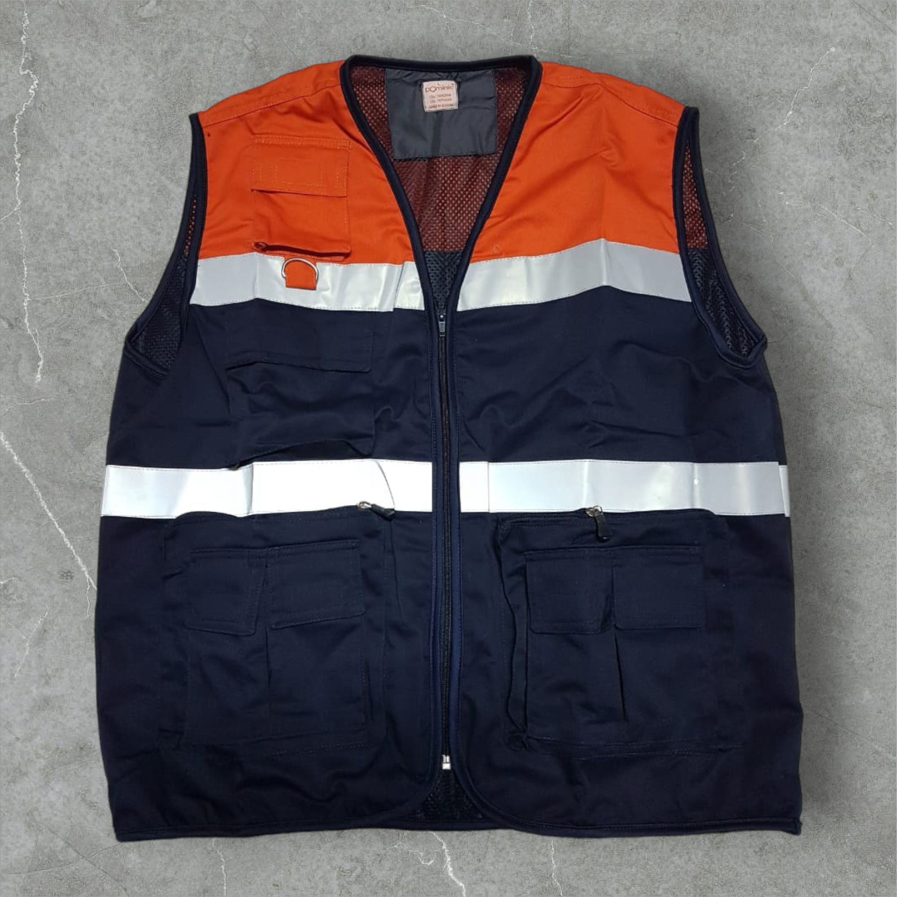
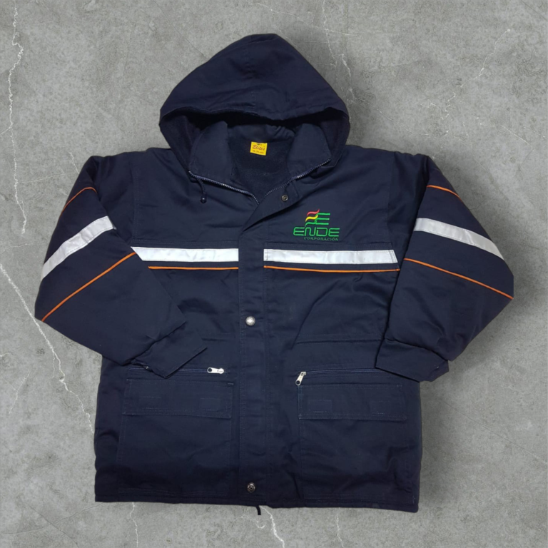
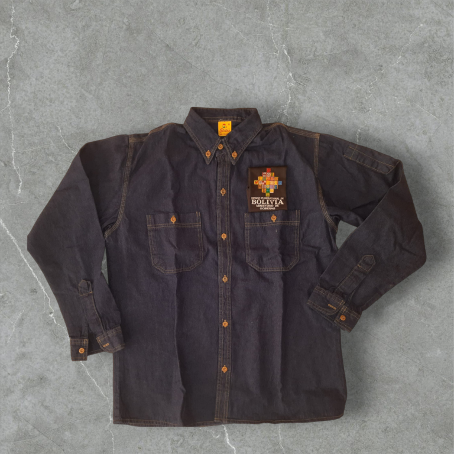

Inicio
Generalidades y Marco Teórico
Introducción
Antecedentes
Planteamiento del Problema
Árbol de Problemas
Formulación del Problema
Propósito del Estudio
Métodos e Instrumentos
Planificación de Actividades
Análisis y Diseño Estructurado
Modelo Ambiental
Modelo de Comportamiento
Análisis y Diseño Orientado a Objetos
Diagrama de Casos de Uso
Diagrama de Clases
Contacto



Previous
Next